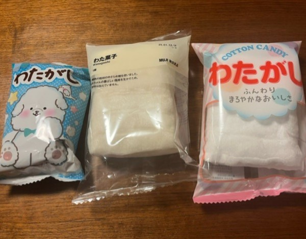
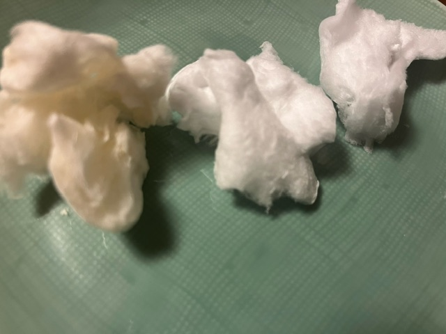

わたあめ

わたあめの歴史
一説によると起源は18世紀のヨーロッパ
加熱した砂糖を手で紡いで作っていた
手間がかかるため上流階級しか食べられなかった
1897年にアメリカで綿菓子製造機の開発に成功
“Fairy Floss”として25セントで販売された
当時の２５セントは0.5円
0.5円は現在の1900円ほどの価値
すごく高い、、（；；）
わたあめ？わたがし？
どちらも間違ってはいない
東日本→わたあめ 西日本→わたがし
1900年代後半には電気飴とよばれていた
わたあめのよびかた in the world
米英語→cotton candy イギリス英語→candy floss
イタリア語→zucchero filato 糸になった砂糖
中国語→綿花糖 マシュマロも綿花糖と言うよ
フランス語→Barbe à Papa 意味はパパのおひげ
フランスのわたあめはピンクが多い つまり…
バーバパパ！名前の由来になっているよ

わたあめがふわふわな理由
A：微細な繊維状になった砂糖に
空気が含まれているから
わたあめ製造機の原理
①砂糖を融解した直後に遠心力で吹き飛ばす
②吹き飛ばされた砂糖が空気によって冷やされる
③空気を含ませながら棒でからめとることでわたあめが完成
わたあめに違いはあるの？
わたあめの材料は砂糖のみ
果たして違いはあるのだろうか、？
今回は三種類のわたあめを比べました

三菱食品、無印商品、太田屋製菓のわたあめです
原材料を比べよう
- 無印良品→砂糖、カラメル色素
- 三菱食品→砂糖、香料
- 太田屋製菓→砂糖
袋から出してみるとこんな感じ
左から無印商品、三菱食品、太田屋製菓です

無印商品のわたあめだけ茶色っぽい
実際に食べた感想
- 無印良品→ふわふわのあとにジャリジャリとする食感。ザラメの粒が大きめ。
- 三菱食品→バニラっぽい甘い匂いがした。くちどけが一番良かった。
- 太田屋製菓→お祭りのわたあめにそっくり。一番ふわっとちぎれる（固まりずらい）
【結論】違いはある！

無印商品

食べ応え抜群！ザラメの存在感があるわたあめが好きな人におすすめ
三菱食品
スイーツ感が一番強い。パケが可愛い♡
パッケージは他に二種類あります


太田屋製菓

一番シンプルなわたあめ。
家でもお祭り気分が味わえちゃう♪
皆さんのおすすめわたあめも是非教えてください
ご清聴ありがとうございました

参考文献，参考サイト
- 株式会社パールエース 綿あめのふわふわのひみつ
- wikipedia